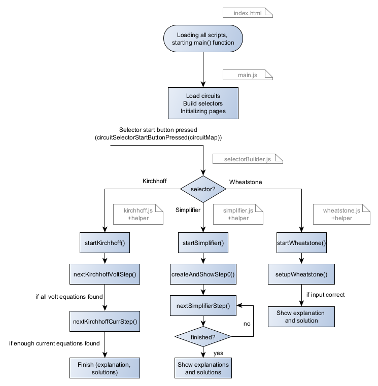

Start
How the frontend is structured
If you cloned the simplipfy repository from gitlab, you
will have an inskale directory, that contains:
- lcapy-inskale: Adapted lcapy library
- Schemdraw: Adapted schemdraw library
- simpliPFy: Backend API for simplipfy
- Pyodide: Frontend functionality
So in this documentation, we will focus on the Pyodide directory, which contains the frontend code for simplipfy. If you want to see more information on the backend, navigate to the simplipfy documentation.
The Pyodide directory contains the following subdirectories:
- Circuits: Containing the .txt, .svg and .json files for the circuits
- Circuits.zip: The above Circuits directory in a zip file
- Circuits_example: Example circuits for the user to download under "Custom Circuits"
- Packages: All necessary Python packages for the backend
- Scripts: Some development scripts
- src: The source code for the frontend
- various files
The src directory contains the following subdirectories:
- conf: Directory containing conf.json to specifics paths and names
- docs: The documentation for the frontend
- fonts: Directory containing the fonts used in the frontend
- resources: Directory containing the resources used in the frontend (Images, Icons, etc.)
- scripts: Directory containing the scripts used in the frontend
- styles: Directory containing the styles used in the frontend
- tutorials: Directory containing the tutorials for the frontend documentation
- jsdoc.json and readme.md for documentation
The scripts directory
The scripts directory contains the following subdirectories:
- applications: Directory containing the applications (simplifier, kirchhoff, wheatstone, ...) for the frontend
- dataObjects:
- stateObject.js: Definition of the state object that is used to store the state of the frontend
- stepObject.js: Containing the definitions for step objects received from the backend
- dataPrivacyAndLegalNotice:
- dataPrivacy.js: Setup function for data privacy page
- legalNotice.js: Setup function for legal notice page
- definitions:
- allowedCircuitDirectories.js: Specifying the allowed circuit directory names
- colorDefinitions.js: Defining the colors used in the frontend for easy access
- emojis.js: Defining the emojis used in the frontend (try to incorrectly solve a circuit if you want to see one)
- romanNumbersMap.js: Mapping of roman numbers to numbers (for Math equations)
- toggleSymbolDefinition.js: Defining the toggle symbol used in the frontend (toggle between symbol and value)
- extern: Containing the external libraries used in the frontend (downloaded to be hosted here instead of using cdn to avoid cookie issues)
- languages:
- de (Directory containing the German translations)
- en (Directory containing the English translations)
- languageManager.js
- pyodideAPI (see more in the pyodideWorker tutorial):
- hardcodedStepSolverAPI.js: Hardcoded step solver so no backend necessary for this
- kirchhoffSolverAPI.js: Kirchhoff solver API
- pyodideAPI.js: Pyodide API for the frontend
- pyodideWorker.js: The webworker that handles the pyodide instance
- pyodideWorkerAPI.js: The webworker API that is called from the frontend
- stepSolverAPI.js: Step solver API (for the basic simplification steps)
- wheatstoneSolverAPI.js: Wheatstone solver API
- workerAvailability.js: Script that checks if the webworker is available on the device
- utils
- circuitMapper.js: For loading the circuits and generating usable circuit objects
- configurations.js: Handler for the conf.json file
- darkModeFunctions.js: Functions for dark mode handling
- loadFonts.js: Function for loading the fonts used in the frontend
- matomoHelper.js: Functions for Matomo tracking
- packageManager.js: Functions for managing the Python packages used in the frontend
- pageManager.js: Functions for managing the "navigator", i.e. the different used pages
- selectorBuilder.js: Functions for dynamically building the selectors (carousels, ...) used
- main.js: The main script that is loaded in the index.html file and initializes the frontend
Program flow
